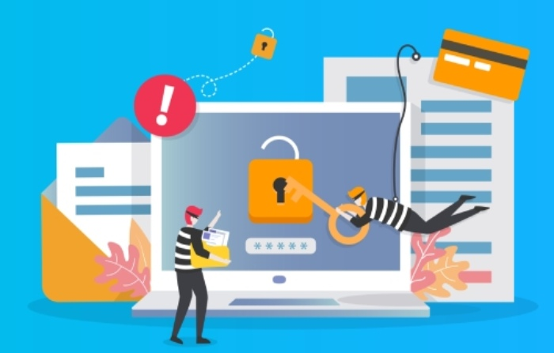

Spear Phishing Protection: How to
Identify and Block Targeted Threats
Spear phishing is a targeted cyberattack that uses personalized messages to trick individuals into revealing sensitive information, clicking malicious links, or authorizing fraudulent transactions. Unlike regular phishing, these attacks exploit trust and familiarity, making them harder to recognize. Understanding the warning signs and adopting effective security practices can help individuals and organizations strengthen their phishing protection and reduce the risk of data breaches.Explore this website for additional information.
Step 1: Understand What Makes Spear Phishing More Dangerous Than Regular Phishing
Why targeted messages are harder to detect
Spear phishing is more dangerous than broad phishing because it is designed around a specific person, role, company, or business process. A regular phishing attack may send the same fake password-reset message to thousands of users, but a spear phishing attack often references real coworkers, vendors, invoices, projects, or executive names. That personalization makes the targeted attack feel legitimate.
Attackers may research LinkedIn profiles, breached credentials, company websites, press releases, and public procurement data before sending the message. In more advanced cases, spear phishing is used as the entry point for malware, business email compromise, credential theft, or an advanced persistent threat. This is why prevention and protection require more than basic spam filtering.

Step 2: Spot Personalization Clues Attackers Use to Build Trust
Common social engineering indicators
A spear phishing message often feels familiar because the attacker includes details that appear private or business-specific. These may include your job title, manager’s name, a recent conference, an internal project, or a supplier relationship. While personalization can build trust, it is also one of the clearest warning signs of a targeted attack.
Look for messages that reference:
- A real executive requesting secrecy or urgency
- A vendor invoice with slightly altered payment details
- A shared document tied to a current project
- A benefits, payroll, or HR request using your personal information
- A login prompt for a cloud security or SaaS application
Step 3: Verify Sender Identity Before Acting on Requests
Confirm identity through trusted channels
Before responding to any sensitive request, verify the sender’s identity. Spear phishing often relies on spoofed display names, lookalike domains, compromised accounts, or manipulated reply chains. A phishing attack may appear to come from a CEO, finance manager, legal counsel, or IT administrator.
Do not verify by replying to the suspicious email. Instead, use a trusted communication method such as a known phone number, corporate messaging platform, or verified ticketing system. For high-risk actions—wire transfers, password resets, file sharing, or access changes—organizations should require multi-factor authentication and identity access management controls.
Step 4: Inspect Links, Attachments, and Login Pages for Red Flags
Technical checks users and security teams should perform
Links and attachments are common delivery mechanisms for malware. A spear phishing email may include a weaponized PDF, a malicious macro, a fake Microsoft 365 login page, or a link to a file-sharing site. Users should hover over links, inspect domain spelling, and avoid entering credentials into pages reached through unexpected emails.
Security teams should support this behavior with layered email security controls. A secure email gateway or email gateway should rewrite suspicious URLs, detonate attachments in a sandbox, and block known malicious domains. FortiMail, FortiSandbox, and FortiGuard security services can support phishing prevention through content inspection, malware analysis, and real-time threat detection.
Step 5: Watch for Urgency, Secrecy, and Financial Pressure Tactics
Behavioral patterns that reveal manipulation
Many spear phishing campaigns use psychological pressure. Attackers know that employees are more likely to make mistakes when they feel rushed, afraid, or obligated to obey authority. A phishing attack may include phrases such as “handle this immediately,” “do not discuss this with anyone,” or “payment must be completed today.”
These tactics are especially common in business email compromise, payroll diversion, gift card scams, and invoice fraud. The targeted attack may not include obvious malware at all; instead, the attacker manipulates the victim into transferring money, exposing sensitive data, or changing account details.
Step 6: Strengthen Email Security With MFA, Filtering, and Authentication Protocols
Layered controls that block phishing before delivery
Strong email security combines technical filtering, authentication, and user controls. SPF, DKIM, and DMARC help validate legitimate sending domains and reduce spoofing. Multi-factor authentication lowers the impact of stolen passwords. Advanced filtering analyzes sender reputation, message behavior, URL patterns, attachments, and known indicators of compromise.
Organizations should also integrate phishing protection with network security. A next-generation firewall such as FortiGate can block command-and-control traffic, while FortiOS provides integrated security functions across the environment.